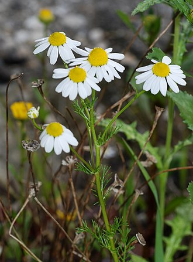
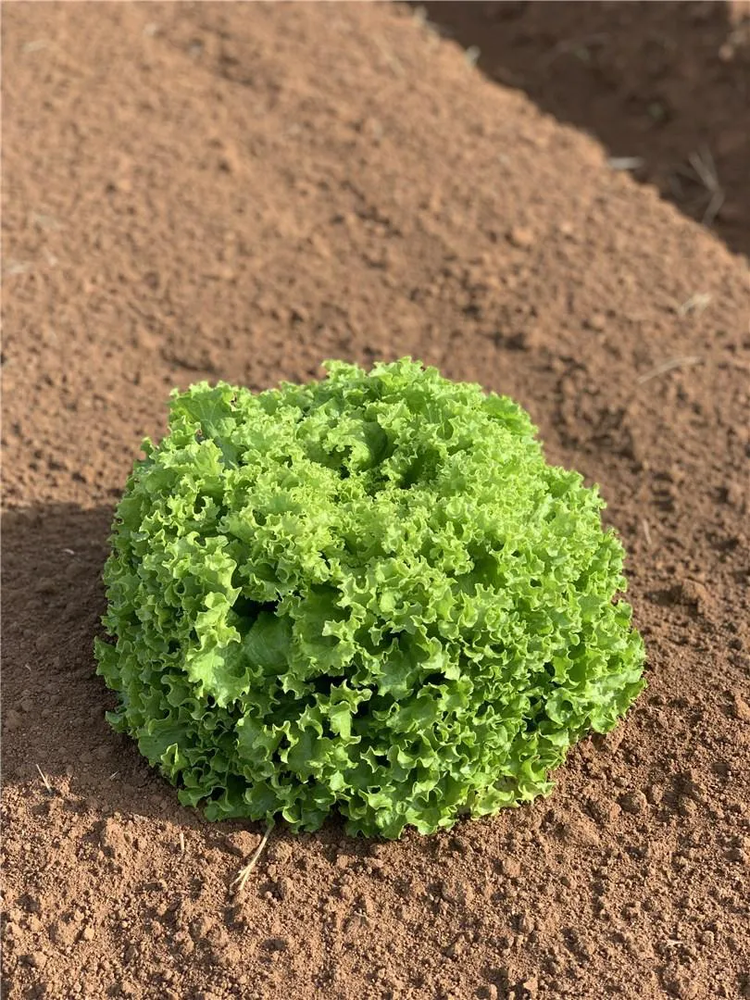

Bem-vindo ao nosso espaço verde!
As plantas transformam ambientes, purificam o ar e trazem mais vida para o nosso dia a dia. Aqui você vai conseguir encontrar o tipo ideal de planta para o seu lar!
Tipos de Plantas
- Ornamentais:
- Medicinais
- Alimentícias
Plantas usadas para decoração:
Samambaia

Costela-de-Adão

Plantas com propriedades terapêuticas:
Babosa

Camomila
Ervas e hortaliças cultivadas para consumo:
Alface
Manjericão

Benefícios das Plantas
- Purificação do ar e produção de oxigênio
- Redução do estresse e bem-estar
- Alimentação e remédios naturais
- Serviço ecológico: polinizadores e solo
Contato
Email: refugio_das_plantas@gmail.com
Para mais informaçõe consulte o site: PictureThis